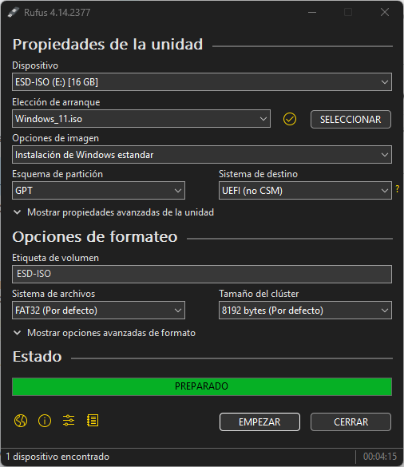
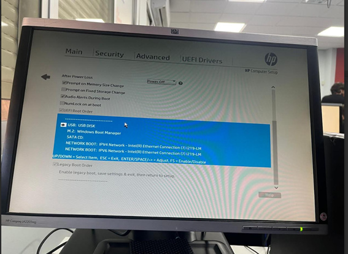
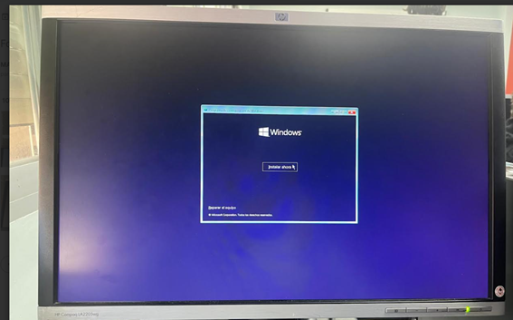
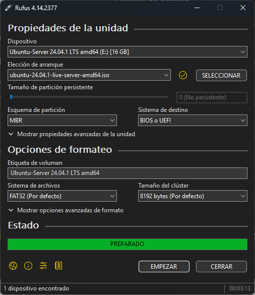
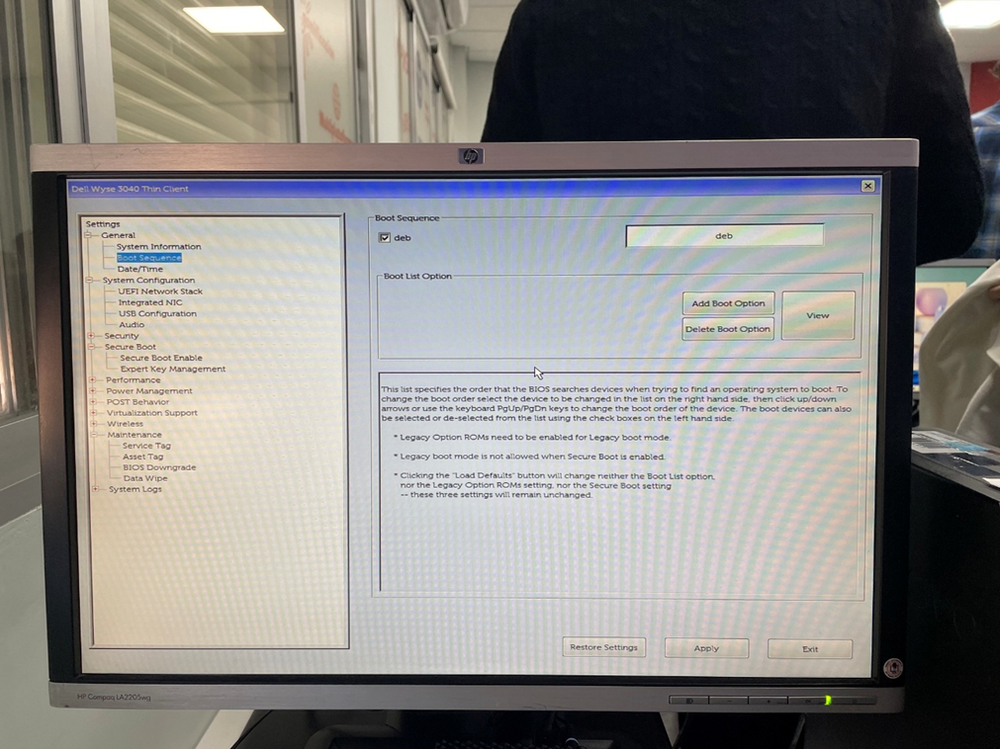
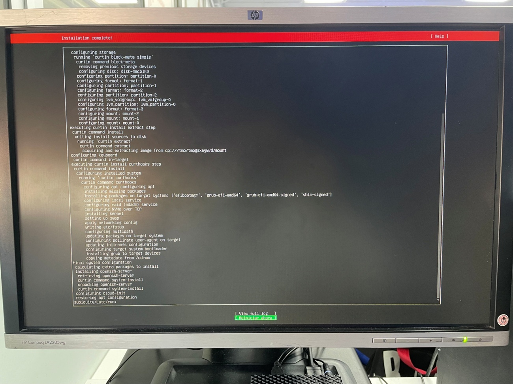
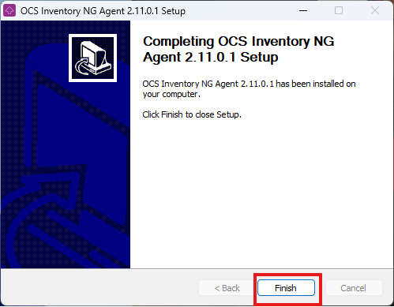
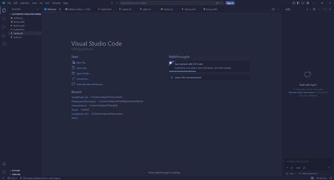
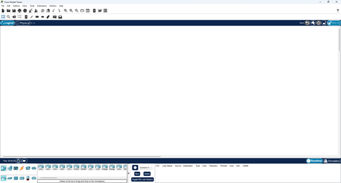

Instalación de Windows 11, Ubuntu Server y aplicaciones necesarias para las prácticas.
Para este proceso primero descargamos Rufus para crear un USB booteable con Windows 11.

Figura 1. Rufus creando el USB booteable.
Una vez creado el USB, iniciamos el ordenador desde la BIOS para comenzar la instalación.

Figura 2. Configuración de arranque en BIOS.
Después seleccionamos el disco y realizamos la instalación de Windows 11.

Figura 3. Instalación de Windows 11.
Posteriormente se instaló Ubuntu Server utilizando un USB booteable.

Figura 4. USB booteable Ubuntu Server.
Accedimos a la BIOS y configuramos el USB como primer dispositivo de arranque.

Figura 5. Configuración Boot Sequence.
Finalmente se completó la instalación de Ubuntu Server correctamente.

Figura 6. Ubuntu Server funcionando.
Instalación y configuración de OCS Inventory.

Instalación del editor Visual Studio Code.

Instalación y comprobación de Cisco Packet Tracer.
